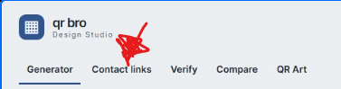

Guia do usuário
Como usar o QR BRO do zero
Abra links de contato para criar um link ou copie o texto que deseja que seu código QR contenha.

Abra o gerador e cole seu link ou texto no campo de conteúdo QR.

Experimente diferentes margens, cores e formas até gostar do código na visualização.

Clique no botão grande Baixar PNG abaixo da visualização para salvar seu código QR como uma imagem.

Há muito mais opções das quais não tirei capturas de tela ou carreguei, mas essa é a ideia.
Ninguém está me pagando por isso, e meu cachorro está esperando há uma hora para passear.
Um dia darei conta do resto.
Gerador
Abrir no QR BRO ↗Insira um URL ou texto. A visualização é atualizada conforme você edita. Baixe um PNG para uma única imagem ou um ZIP para camadas QR separadas.

Conteúdo QR
Cole o texto completo que você deseja que o scanner leia.
Codificação
Escolha a correção de erros e um padrão de máscara. Uma correção mais alta deixa mais espaço para recuperar dados danificados, mas pode aumentar a densidade.
Margens
Defina a borda silenciosa em módulos. Quatro módulos claros ajudam os scanners a localizar o código. Ruído, espaço seguro e controles de camada alteram o design circundante.
Pixels e marcadores
Escolha formas de módulo e estilize os marcadores de canto separadamente. Digitalize o resultado após uma mudança de forma.
Cores
Escolha as cores claras e escuras ou inverta-as. Mantenha contraste suficiente para digitalização.
Opções avançadas
Expanda este grupo para controlar a densidade, dimensões e perspectiva do QR.
Versão e tamanho do pixel
Limite o intervalo da versão QR e ajuste o tamanho do pixel. Se o conteúdo exceder o limite de versão, reduza-o ou aumente o máximo.
Transformar
Ajuste a perspectiva em cada eixo. Verifique a imagem exportada após aplicar distorção.
Escala e aspecto
Defina o zoom de visualização, tamanho da tela, proporções e transparência. Use os controles JSON para exportar ou recarregar configurações editáveis.
Links de contato
Abrir no QR BRO ↗Escolha uma plataforma primeiro. Insira o destinatário solicitado, como um número de telefone internacional, nome de usuário ou e-mail. Adicione uma mensagem onde houver suporte. Para campos de e-mail de grupo, separe os destinatários com vírgulas ou espaços. Copie o link gerado ou escolha Criar QR para abri-lo no gerador.

Verifique
Abrir no QR BRO ↗Carregue, solte ou cole uma imagem QR. Leia o conteúdo decodificado e o status da digitalização. Revise o contraste, a zona silenciosa e a densidade e, em seguida, copie o resultado ou envie-o para o gerador.

Diferenças de imagem
Inspecione quais pixels foram alterados entre a imagem original e a processada.
Ajustes de imagem
Experimente redimensionar, escala de cinza, contraste, brilho ou desfoque. Bloqueie uma configuração para mantê-la durante tentativas aleatórias. Compare a nova digitalização com a original.
Comparar
Abrir no QR BRO ↗Carregue uma imagem de destino e um QR de origem ou use a saída atual do gerador como origem. A terceira visualização mapeia as diferenças entre os módulos. Você pode ampliar qualquer entrada e copiar seu texto decodificado.

Processamento de destino
Ajuste a escala de cinza, o contraste, o brilho, o desfoque e a pixelização antes de comparar.
Alinhamento de grade
Use o destino ou origem como referência de grade compartilhada. Escolha o alinhamento independente quando as imagens tiverem margens diferentes. Os controles manuais ajustam o tamanho e a margem da grade.
Aparência da grade
Ative a grade, selecione as imagens em que ela aparece e ajuste a cor e a opacidade da linha.
Configurações de sobreposição
Ative a sobreposição e ajuste a mesclagem e a opacidade para comparar detalhes sobrepostos.
Configurações de diferença
Escolha um modo de cor para correspondências, tipo de diferença ou intensidade. Selecione módulos para uma inspeção mais detalhada. Reordene as seleções ou altere suas cores de identificação.
Estatísticas de comparação
Leia a contagem de incompatibilidade e o brilho médio para avaliar a comparação selecionada.
Configurações de correção
Ajuste a correção, visualize-a, destaque as diferenças e baixe a imagem ou máscara de correção.
Minha conta e salvar slots
Abrir no QR BRO ↗Use os botões numerados para alternar entre dez projetos locais. Faça login para sincronizar entre dispositivos. Crie uma conta com e-mail e senha e confirme através do link ou código do e-mail. Google e GitHub também estão disponíveis. Na sua conta você pode editar seu perfil, gerenciar métodos de login e autenticação de dois fatores, revisar conflitos de sincronização, fazer backup de configurações ou sair.

Aparência e linguagem
Abrir no QR BRO ↗Abra o botão de aparência ao lado dos slots para salvar. Escolha um idioma, tema e modo claro ou escuro. Sua escolha de idioma é lembrada neste dispositivo.

Créditos
Abrir no QR BRO ↗Créditos abertos para links de criadores, bibliotecas e agradecimentos. Os termos de uso estão vinculados no rodapé do site.